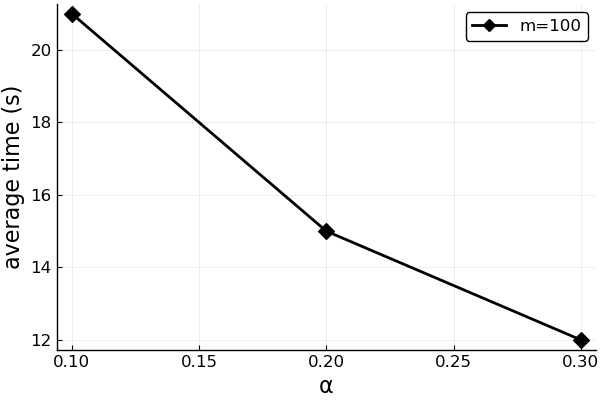

Experiments
Problems
#
RobRecSolver.minimumKnapsackProblem — Function.
minimumKnapsackProblem(C, w, W)
Solve minimum knapsack problem using vector of costs C, weights w and overall weight limit W.
#
RobRecSolver.getKnapsackConstraints — Function.
getKnapsackConstraints(w, W)
Return a list of constraints defining a set of feasible solutions of a minimum knapsack problem. Each constraint is function with one parameter, which is variable of a mathematical programming model.
#
RobRecSolver.minimumAssignmentProblem — Function.
minimumAssignmentProblem(C)
Solve minimum assignment problem using vector of costs C.
#
RobRecSolver.getAssignmentConstraints — Function.
getAssignmentConstraints(m)
Return a list of constraints defining a set of feasible solutions of a minimum assignment problem. Each constraint is function with one parameter, which is variable of a mathematical programming model.
Testing Framework
#
RobRecSolver.Experiments — Module.
RobRecSolver.Experiments is a module containing all of the code regarding conduction of experiments.
#
RobRecSolver.Experiments.generateData — Function.
generateData(problemDescriptor::ProblemDescriptor)
Helper function designed to generate experiment data for each problem under consideration. It returns a tuple (C, c, d, Γ, X) where
Cis a vector of nonnegative first stage costscis a vector of a nonnegative nominal second stage costsdis a vector of maximal deviations of the costs from their nominal valuesΓis a budget, or the amount of uncertainty, which can be allocated to the second stage costsXis a set of feasible solutions represented as a list functions, each of which accepts a list of JuMP variables as an argument and returns a JuMP linear constraint
#
RobRecSolver.Experiments.runExperiments — Function.
runExperiments(ns::Array{Integer}, ms::Array{Integer}; αs = collect(0.1:0.1:0.9), numberOfInstances = 5)
Entry point of experiments. This function runs experiments for minimum knapsack problem with problem size n specified by the list ns and minimum assignment problem with problem size m specified by the list ms. Optional argument αs specify a list of parameters defining neighbourhood of some solution $x$ and optional argument numberOfInstances specify number of problem instances to be generated for each value of alpha.
Examples:
julia> using RobRecSolver.Experiments
julia> runExperiments([100, 400, 1000], [10, 25, 100])
#
RobRecSolver.Experiments.runKnapsackExperiments — Function.
runKnapsackExperiments(ns; αs = collect(0.1:0.1:0.9), numberOfInstances = 5)
Runs experiments for minimum knapsack problem.
#
RobRecSolver.Experiments.runAssignmentExperiments — Function.
runAssignmentExperiments(ms; αs = collect(0.1:0.1:0.9), numberOfInstances = 5)
Runs experiments for minimum assignment problem.
#
RobRecSolver.Experiments.exportKnapsackResults — Function.
exportKnapsackResults(problemDescriptor, αs, results)
Saves results of minimum knapsack problem experiments to CSV files and as PDF plots.
Arguments
problemDescriptor::ProblemDescriptor: implementation ofProblemDescriptorfor this problem.αs::Array{Integer, 1}: list of values of α.results::Array{Float64, 1}: three-dimentional array of results, where first dimention specify problem, second dimention specify ratios or times results, the third one contain results for each value of α.
#
RobRecSolver.Experiments.exportAssignmentResults — Function.
exportAssignmentResults(problemDescriptor, αs, results)
Saves results of minimum assignment problem experiments to CSV files and as PDF plots.
Arguments
problemDescriptor::ProblemDescriptor: implementation ofProblemDescriptorfor this problem.αs::Array{Integer, 1}: list of values of α.results::Array{Float64, 1}: three-dimentional array of results, where first dimention specify problem, second dimention specify ratios or times results, the third one contain results for each value of α.
#
RobRecSolver.Experiments.saveCsv — Function.
saveCsv(filename, data, columnNames)
Saves data described by columnNames to CSV file with namefilename.
Examples:
julia> using RobRecSolver
julia> Experiments.saveCsv("item_prices.csv", ["milk" 100; "ham" 250], ["item", "price"])
The above command will create file item_prices.csv with the following content:
item,price
milk,100
ham,250
#
RobRecSolver.Experiments.drawAndSavePlot — Function.
drawAndSavePlot(filename, x, ys, xlabel, ylabel, yslabels; linewidth=2, linestyles = [:solid :dash :dashdot :dot :solid], shape = [:diamond :pentagon :star4 :utriangle :square], palette=cgrad([:black, :grey]), annotations = [])
Draws plot and saves it to PDF file with name filename. Here x is a values of 0X axis, ys is a columns of series, xlabel is label of 0X axis, ylabel is label of 0Y axis and yslabels is a labels of individual series.
Examples:
julia> using RobRecSolver, Plots
julia> pyplot()
julia> Experiments.drawAndSavePlot("plot.pdf", [0.1, 0.2, 0.3], [21, 15, 12], "α", "average time (s)", "m=100")
The above command will draw the plot shown below and save it as plot.pdf. 
The rest of the arguments function uses is self-descriptive and is based on the ones from the Plots.jl package. Default values of arguments are adjusted to the needs of the publication.